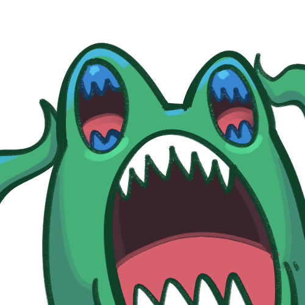

내면 나 대신 요그 AI가 한턴을 더 진행해 주는데
이거 필드 뻥 뚫리고 비밀도 없는데 명치 안 치는 빡통 AI라서 걍 장애신 취급 당함...

내면 나 대신 요그 AI가 한턴을 더 진행해 주는데
이거 필드 뻥 뚫리고 비밀도 없는데 명치 안 치는 빡통 AI라서 걍 장애신 취급 당함...
원래 병신이였으니 고증이 맞다
요그가 병신이었다니 무슨소리야
ㄹㅇ 느조스 제외하고 가장 아제로스에 해악 끼친 고대신인데...
초능력자 신임
딱 한가지 플레이어들이 너무 셌다는거 빼면..
??: 이시발롬들이 왜 죽어도 다시 살아나서 덤비지???ㅜㅜ
하스에선 요그는 12시편이라 병신이 맞음
하지만 다 좆된 게임 한방에 이기게도 해주는 카드긴 하잖아.
하스스톤에선 운빨좆망랜덤카드라 ㅋㅋㅋㅋㅋ
오베때부터 하고 판다까지했는데 일단 인정
슬슬 침 흘릴 나이야
고대신이 너한테 들러붙었으면 좆되는게 당연하잖아
심하면 내 카드 다섯장 태우고서 걍 턴 넘기더라
아니 요그 관련 카드가 몇장이나 나오는거야 ㅋㅋㅋㅋ
국밥 탐험가연맹과 고대신임 ㅋㅋㅋ
개쎈거 깔고 요그써서 담턴에 명치쳐서 이기는게 OTK라서 이악물고 명치 안 치게 패치했나ㅋㅋㅋㅋ
다른건 몰라도 필드 깔려있는건 당연히 쳐야지 그것도 안하면 버그아님?
얼방걸고 삐대다가 수틀리면 요그던지던 제이나 씨발년들때메 비삼자 꽉꽉채우고 다녔던때가 생각나네 시팔년들
알 필요 없다고? 난 이미 알고있다!
즐 요그님이 해주실거임~
요그사론은 원래 예능이었자너 ㅋㅋㅋ
리리가 리메이크가 됐다구요?
더 쪼이게 패치됬어요
역시 블리자드야 알아주는군
불작, 하수인으로 치면 킬각인데 불작안쓰는거보고 어이가없더라
개뻔한 킬각이면 불작으로 명치 터트리는데 필드에 하수인좀 있으면 딴거쓰는경향이 있더라
빡대가리가 아니라 랜덤이라 그런거 아님?
아니면 대충 필드 밀어두고 던지면 무조건 이기잖아
노노. 옛날에 전지전능하신 제피로스님깨서는 항상 답만 찾아주셨음
요그사론님께서는 너의 승리가 아니라 재미를 원하신다
하스 기도메타가 재밌긴했어
죽음의 신앞에 무릎을 꿇어라!
제일 오리지널 처음나왓을때 요그사론이 그냥 좆잼이였지 너프먹고는 그냥 별로임
무슨 알고리즘이 있는게 아니라 걍 ㄹㅇ 랜덤으로 행동하는거 아님?
간판카드인가본데 일러스트가 영 아니네